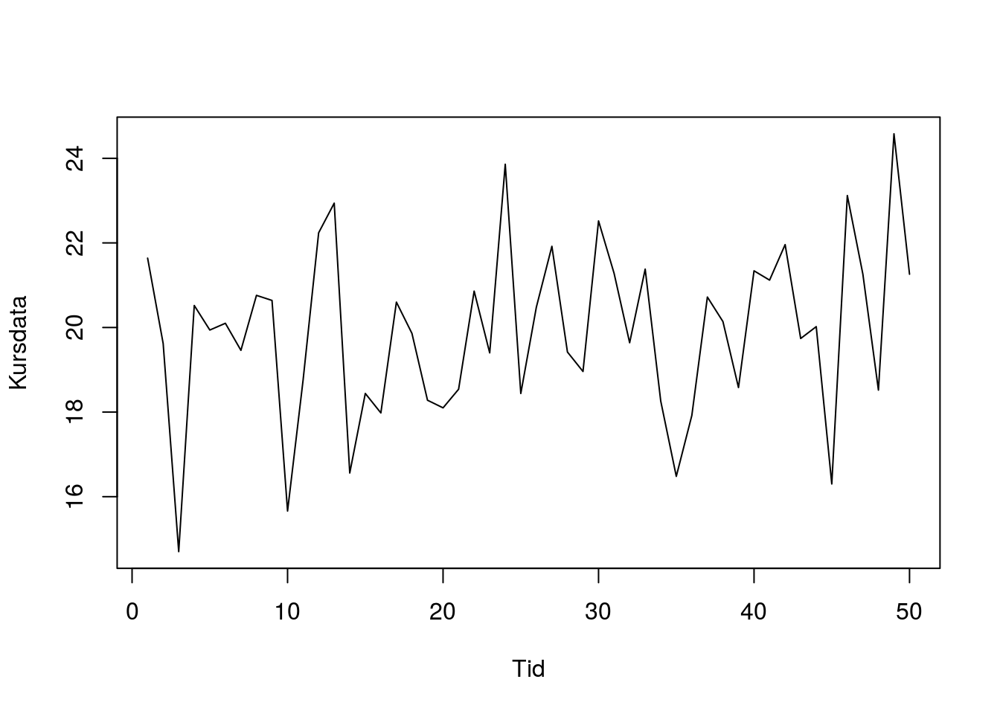
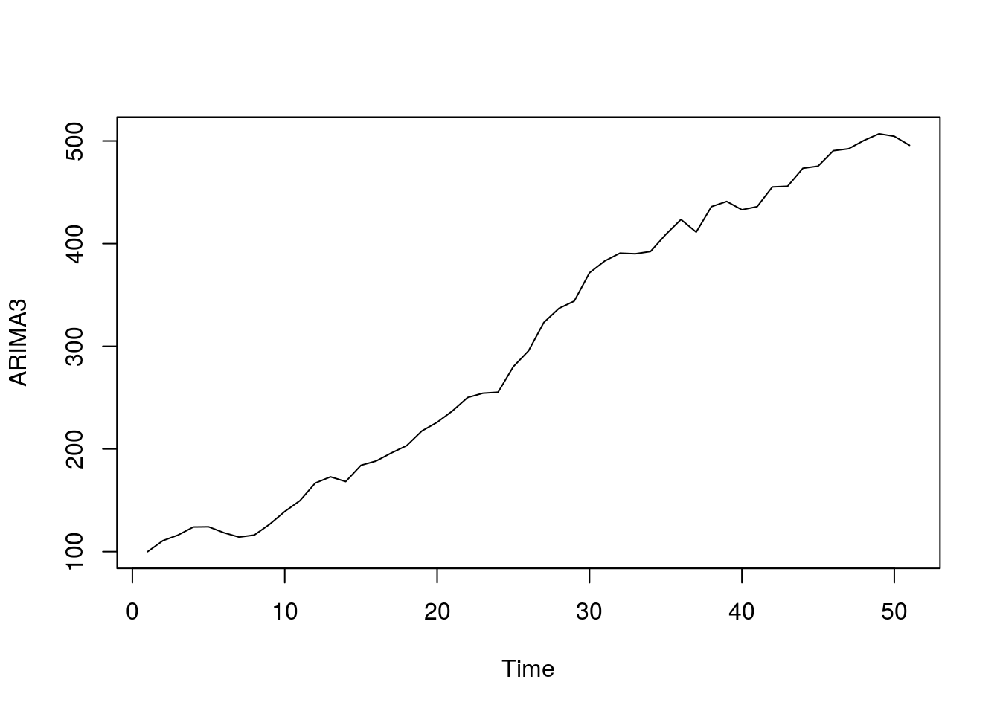
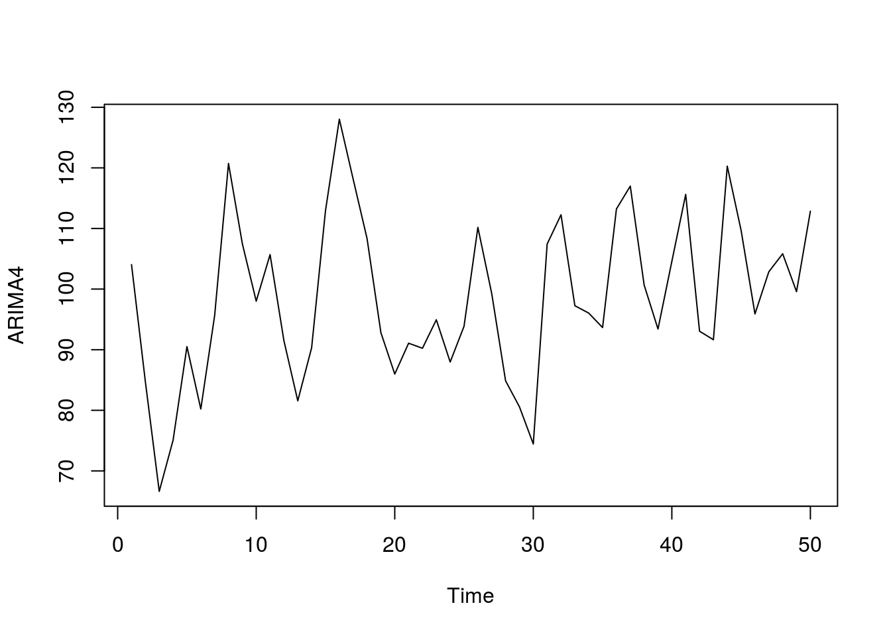
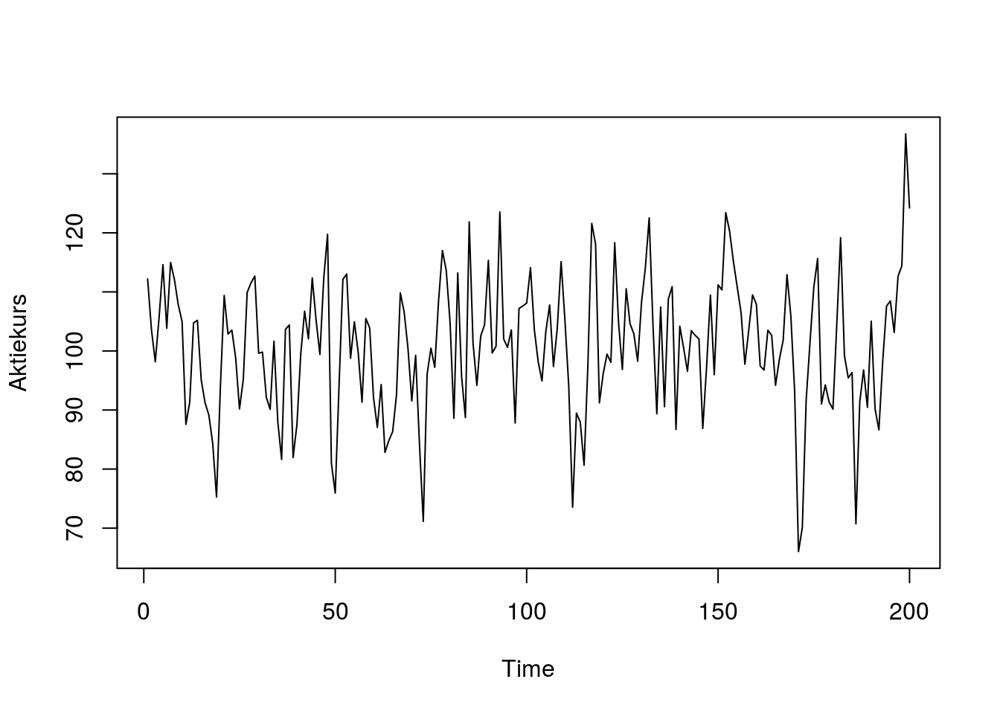
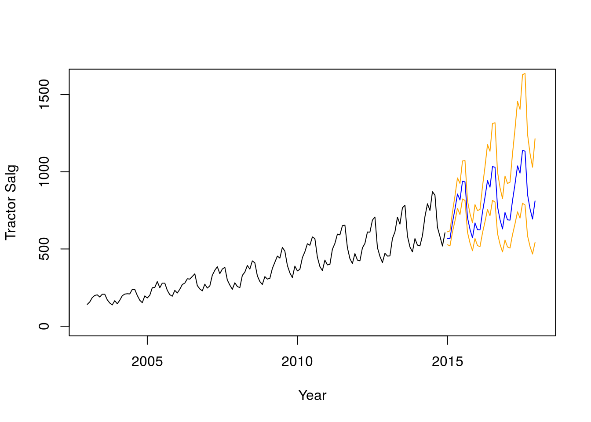

Kapitel 22 Tidsrækker og ARIMA
Gennemgangen af tidsrækkeanalyse bygger meget på praktisk anvendelighed (dvs. vi vil gerne kunne forudsige kursudviklingen), vi vil springe let hen over teorien der kan være tung og er meget omfattende. Nedenstående links giver dog en indføring i den teoretiske del, som vi her ikke berører.
http://ucanalytics.com/blogs/arima-models-manufacturing-case-study-example-part-3/
Her er en gennemgang af forskellige typer af tidsrækker man kan opleve.
https://people.duke.edu/~rnau/411arim.htm#arima010
Video om ARIMA https://youtu.be/Aw77aMLj9uM
En tidsrække er observationer, der er observeret over tid, fx. lukkekursen på Novo i 2018, kan vi beskrive som en tidsrække. Hvor vi både registrerer dato og lukkekursen. ARIMA er et avanceret analyseværktøj til at beskrive tidsrækker. Vi vil i de følgende kaptiler, med eksempler beskrive hvordan de enkelte elementer i ARIMA rent praktisk fungerer.
AR står for AutoRegressive I står for Integrated MA står for Moving Average
Lad i de følgende afsnit se på nogle simple eksempler for trinvis, at kunne beskrive hvorledes modellen fungerer.
22.1 ARIMA(0,0,0)
Nedenfor har vi aktiekurser for 50 dage for en fiktiv aktie, vi vil nu undersøge om disse kan bruges til at forudsige noget om fremtidige aktiekurser. For at gøre dette, skal man enten importere Excelfilen, eller copy paste data fra rammen nedenfor.
Hent ARIMA1.xlsx Excel filen her. Importer ARIMA1.xlsx til R via menuen File - Import Dataset - Excel. Nu skal datasættet rettes til en tidsserie med ts() kommandoen.
ARIMA1 <- ts(ARIMA1)Vi kan nu plotte vore data i R.
plot.ts(ARIMA1, xlab='Tid', ylab = 'Kursdata')
Det er svært at se nogen tydelig udvikling i kursen.
Vi benytter auto.arima til at undersøge om der er en systematik i tidsserien, for at bruge denne funktion skal vi hente og loade pakken forecast med fx. pacman:
Funktionen auto.arima i R er en fantastisk funktion, der automatisk finder den ARIMA model, der passer bedst på observationerne.
auto.arima(ARIMA1)## Series: ARIMA1
## ARIMA(0,0,0) with non-zero mean
##
## Coefficients:
## mean
## 19.8964
## s.e. 0.2872
##
## sigma^2 estimated as 4.209: log likelihood=-106.37
## AIC=216.74 AICc=217 BIC=220.57Output ARIMA(0,0,0) with non-zero mean, fortæller os at data er ligesom hvid støj. Den bedste forudsigelse af aktieprisen, vi kan komme med er gennemsnittet af alle kurserne. Vi kan altså ikke forudsige prisen vha. vore fine værktøjer.
Akaike Information Criterion (AIC) , og Bayesian Information Criterion (BIC) benyttes til at vælge ARIMA modellen med mindst AIC og BIC værdier. auto.arima finder den bedste model automatisk.
Her er ligningen for aktiekursen, den bedste forudsigelse af den fremtidige kurs er den gennemsnitlige kurs der tidligere er observeret.
\[\hat{Y_t}=19.90\]
Variablen \(\hat{Y}_t\), kaldet Y hat t angiver vort estimat (gæt) på aktiekursen på tidspunkt \(t=1,2,3,...\). Der er således så lidt systematik i Data at her er tale om en ARIMA(0,0,0) model. Vi ser også at der står “ARIMA(0,0,0) with non-zero mean” i output fra R.
22.2 ARIMA(1,0,0) eller AR(1) autoregression
En ARIMA(1,0,0) model kan skrives som:
\[\hat{Y_t}=c + \phi Y_{t-1}\]
Vi kan forklare \(\hat{Y_t}\) er værdien for tidsrækken på tidspunkt \(t\), ud fra en konstant \(c\) plus en faktor \(\phi\), der ganges på værdien for tidsrækken på tidspunkt \(t-1\). For at bestemme c skal vi kende tidsrækkens sande middelværdi \(\mu\) og \(\phi\), disse værdier kan R beregne for os. Vi kan så beregne konstanten \(c=(1-\phi)\cdot \mu\). Det betyder så at vi kan estimere fremtidige værdier tidsrækken.
Vi har nu et eksempel hvor den sande middelværdi for tidsrækken er \(\mu=100\) og \(\phi=0.5\) for en ARIMA(1,0,0) model. Så kan vi beregne \(c=(1-\phi)\cdot \mu=(1-0.5)\cdot 100=50\) er middelværdien estimeret ved den gennemsnitlige kurs. Ligningen for modellen kan så skrives som:
\[\hat{Y_t}=c + \phi Y_{t-1} \Leftrightarrow \hat{Y_t}=50 + 0.5 Y_{t-1}\]
\(\phi\) fortæller, hvis kursen dagen før var 80 gennemsnitskursen er 100, vil kursen imorgen \(t=1\) ifølge modellen være forudsagt som: \[50+0.5\cdot 80=90\] Dagen efter \(t=2\) vil kursen så være forudsagt til: \[50+0.5\cdot 90=95\] Om 3 dage dvs. \(t=3\) vil kursen så være forudsagt til: \[50+0.5\cdot 95=97.5\] Om 4 dage dvs. \(t=4\) vil kursen så være forudsagt til: \[50+0.5\cdot 97.5=98.75\]
Osv..
Vi siger at forudsagte værdier konvergerer mod (dvs. nærmer sig) \(\mu=100\).
AR i ARIMA, står for autoregression, selv-regression mod middelværdien, i eksemplet så vi hvordan værdien nærmer sig 100, hvis vi forudsiger flere dages kurser kan vi se dette.
\(\phi\) må kun antage værdier mellem og ikke lig med -1 og 1, hvilket betyder den er stationær, altså nærmer sig den sande middelværdi \(\mu\).
Hvad vil der ske hvis \(\mu=100\) og \(\phi=-0.5\) for en ARIMA(1,0,0) model (husk \(c=(1-\phi)\cdot\mu\) når man skal bestemme modellen)?
Hent ARIMA2.xlsx Excel filen her. Importer ARIMA2.xlsx til R via menuen File - Import Dataset - Excel. Nu skal datasættet rettes til en tidsserie med ts() kommandoen.
ARIMA2 <- ts(ARIMA2)aaa2 <- auto.arima(ARIMA2)
aaa2## Series: ARIMA2
## ARIMA(1,0,0) with non-zero mean
##
## Coefficients:
## ar1 mean
## 0.3664 103.2372
## s.e. 0.1301 2.4492
##
## sigma^2 estimated as 128.3: log likelihood=-191.36
## AIC=388.73 AICc=389.25 BIC=394.46Her afslører auto.arima 1. ordens autoregression dvs.
Modellen kan skrives som.
\[\hat{Y_t}=c + \phi Y_{t-1}\Leftrightarrow \hat{Y_t}=(1-0.3664)\cdot 103.2372 + 0.3664Y_{t-1}\Leftrightarrow \hat{Y_t}=65.4125 + 0.3664Y_{t-1}\]
Vi ser nu igen på vores eksempel med ARIMA2, vi kan nu i R forudsige aktiekursen 12 perioder frem med predict:
predict(auto.arima(ARIMA2), n.ahead = 12)$pred## Time Series:
## Start = 51
## End = 62
## Frequency = 1
## [1] 105.3673 104.0177 103.5232 103.3420 103.2756 103.2513 103.2424
## [8] 103.2391 103.2379 103.2375 103.2373 103.2373Spørgsmål ARIMA(1,0,0)
Hent ARIMA22.xlsx Excel filen her. Importer ARIMA22.xlsx til R via menuen File - Import Dataset - Excel. Bestem for den fremtidige aktiekurs 15 perioder frem, udregn direkte fx. vha. Excel og tjek dit resultat i R.Svar ARIMA(1,0,0)
ARIMA22 <- ts(ARIMA22)
aaa22 <- auto.arima(ARIMA22)
aaa22## Series: ARIMA22
## ARIMA(1,0,0) with non-zero mean
##
## Coefficients:
## ar1 mean
## 0.2286 215.4871
## s.e. 0.1371 2.3978
##
## sigma^2 estimated as 180.3: log likelihood=-199.82
## AIC=405.63 AICc=406.15 BIC=411.37predict(auto.arima(ARIMA22), n.ahead = 15)$pred## Time Series:
## Start = 51
## End = 65
## Frequency = 1
## [1] 216.7592 215.7779 215.5536 215.5023 215.4905 215.4878 215.4872
## [8] 215.4871 215.4871 215.4871 215.4871 215.4871 215.4871 215.4871
## [15] 215.4871Spørgsmål ARIMA(1,0,0)
Hent ARIMA23.xlsx Excel filen her. Importer ARIMA23.xlsx til R via menuen File - Import Dataset - Excel. Bestem for den fremtidige aktiekurs 15 perioder frem, udregn direkte fx. vha. Excel og tjek dit resultat i R.22.3 ARIMA(0,1,0) eller I(1) Random Walk with a drift
Hvis en serie er ikke-stationær, er den simpleste model en random walk:
\[\hat{Y_t}-Y_{t-1}=\mu\Leftrightarrow \hat{Y_t}=Y_{t-1}+\mu\] Dette betyder at Y stiger konstant med \(\mu\) i hver periode. Drift betyder at tidsrækken stiger konstant.
Forestiller man sig en ARIMA(0,1,0) med drift 10 og en kurs på tidspunkt t-1 på 120, vil vi forudsige en kurs på 130 ved tid t og 140 ved tid t+1 osv. Vi kan opskrive modellen som: \[\hat{Y_t}-Y_{t-1}=10\Leftrightarrow \hat{Y_t}=Y_{t-1}+10\]
Hent ARIMA3.xlsx Excel filen her. Importer ARIMA3.xlsx til R via menuen File - Import Dataset - Excel. Nu skal datasættet rettes til en tidsserie med ts() kommandoen.
ts.plot(ARIMA3)
auto.arima(ARIMA3)## Series: ARIMA3
## ARIMA(0,1,0) with drift
##
## Coefficients:
## drift
## 7.9149
## s.e. 1.2790
##
## sigma^2 estimated as 83.46: log likelihood=-181.05
## AIC=366.1 AICc=366.36 BIC=369.93Modellen ovenfor kan skrives som: \[\hat{Y_t}-Y_{t-1}=\mu\Leftrightarrow \hat{Y_t}-Y_{t-1}=7.9\Leftrightarrow \hat{Y_t}=Y_{t-1}+7.9\] Vi indsætter drift i stedet for \(\mu\), tolningen er at modellen forudsiger at aktiekursen stiger med 7.9 fra periode til periode.
Hvis vi har en ren random walk model uden drift dvs. med \(\mu=0\) ARIMA(0,1,0) for en aktiekurs , forventer vi at kursen til tid t vil være den samme som til tid t-1. Denne kan skrives som:
\[\hat{Y_t}-Y_{t-1}=0\]
22.4 ARIMA(0,0,1) eller MA(1) Moving average
Vi kan i stedet for at bruge tidligere aktiekurser til at forudsige aktiekursen i stedet benytte tidligere målefejl residualer til at forudsige kursen.
Modellen kan skrives som:
\[\hat{Y_t}=\mu+\theta_1 e_{t-1}\] Hvis vi forestiller os \(\mu=50\) \(\theta_1=0.5\) kursen til tid t-1 var 120 forudsigelsen til tid t-1 var 100, så målefejlen residualen til tid t-1 er \(e_{t-1}\) er faktisk kurs minus forudsagt kurs altså 120-100=20. Nu kan vi forudsige kursen til tid t som: \[\hat{Y_t}=\mu+\theta_1 e_{t-1}\Leftrightarrow \hat{Y_t}=50+0.5\cdot20=60\]
Hent ARIMA4.xlsx Excel filen her. Importer ARIMA4.xlsx til R via menuen File - Import Dataset - Excel. Nu skal datasættet rettes til en tidsserie med ts() kommandoen.
ts.plot(ARIMA4)
auto.arima(ARIMA4)## Series: ARIMA4
## ARIMA(0,0,1) with non-zero mean
##
## Coefficients:
## ma1 mean
## 0.9053 99.0176
## s.e. 0.0664 2.5588
##
## sigma^2 estimated as 95.68: log likelihood=-184.81
## AIC=375.62 AICc=376.14 BIC=381.35Vi kan nu forudsige aktiekursen 12 perioder frem med predict:
predict(auto.arima(ARIMA4), n.ahead = 12)$pred## Time Series:
## Start = 51
## End = 62
## Frequency = 1
## [1] 113.64960 99.01756 99.01756 99.01756 99.01756 99.01756 99.01756
## [8] 99.01756 99.01756 99.01756 99.01756 99.01756Hvorfor svarer den forudsagte værdi til mean i en ren ARIMA(0,0,1) eller MA(1) model? (Vink hvad er definitionen på en residual)
22.5 Plots med forskellige modeller
## Series: ap1
## ARIMA(0,1,1) with drift
##
## Coefficients:
## ma1 drift
## -0.3761 1.2134
## s.e. 0.1442 0.6615
##
## sigma^2 estimated as 57.13: log likelihood=-171.14
## AIC=348.27 AICc=348.79 BIC=354.01Kursen svinger omkring middelværdien.
## Series: ap2
## ARIMA(0,1,1)
##
## Coefficients:
## ma1
## 0.5902
## s.e. 0.1079
##
## sigma^2 estimated as 93.92: log likelihood=-184.22
## AIC=372.43 AICc=372.69 BIC=376.26
## Series: ap3
## ARIMA(1,0,1) with non-zero mean
##
## Coefficients:
## ar1 ma1 mean
## -0.1724 0.7547 100.7856
## s.e. 0.1011 0.0663 1.0238
##
## sigma^2 estimated as 95.27: log likelihood=-738.25
## AIC=1484.5 AICc=1484.7 BIC=1497.69Vi kan også grafisk vise hvordan kursen vil udvikle sig med 80% og 95% konfidensbælter.
forecast(auto.arima(ap3))## Point Forecast Lo 80 Hi 80 Lo 95 Hi 95
## 201 100.2971 87.78819 112.8061 81.16636 119.4279
## 202 100.8698 86.39442 115.3453 78.73159 123.0081
## 203 100.7711 86.24132 115.3009 78.54971 122.9925
## 204 100.7881 86.25672 115.3195 78.56426 123.0120
## 205 100.7852 86.25374 115.3166 78.56126 123.0091
## 206 100.7857 86.25425 115.3172 78.56176 123.0096
## 207 100.7856 86.25416 115.3171 78.56167 123.0096
## 208 100.7856 86.25417 115.3171 78.56169 123.0096
## 209 100.7856 86.25417 115.3171 78.56168 123.0096
## 210 100.7856 86.25417 115.3171 78.56169 123.0096plot(forecast(auto.arima(ap3)))22.6 ARIMA af højere orden
Arima modeller kan afhænge af flere tidligere perioder, fx kan ligningen for ARIMA(2,0,0) eller AR(2), opskrives som:
\[\hat{Y_t}=c + \phi Y_{t-1}+ \phi_2 Y_{t-2}\] Modellen afhænger altså af 2 tidligere perioder (lags) og ikke en. Man betegner dette som en model med lag 2.
Arima modeller kan indeholde flere forskellige elementer med lag som fx. ARIMA(0,2,1).
22.7 ARIMA og sæsonalitet
Hvis fx. en aktie handles lavere om fredagen kan ARIMA modellerne korrigere for dette ved sæsonkorrektion. I sæsonkorrigerede modeller vises dette som en ekstra vektor med 3 tal for hhv. sæsonkorrigeret AR eller SAR, sæsonkorrigeret I eller SI og sæsonkorrigeret MA eller SMA. En model som ARIMA(1,0,0)(1,0,0) har altså udover AR også en sæsonkomponent.
22.8 ARIMA eksempler
22.8.1 Traktorer
Hent følgende data for traktor salg, med følgende kommandoer i R.
data = read.csv('http://ucanalytics.com/blogs/wp-content/uploads/2015/06/Tractor-Sales.csv')
data = ts(data[,2],start = c(2003,1),frequency = 12)Vi ser salget er voksende over tid, der er ligeledes en sæsonkomponent.
plot(data, xlab='Years', ylab = 'Tractor Sales')Differens tranformer data for at generere stationære data mht. middel (fjern trend)
plot(diff(data),ylab='Differenced Tractor Sales')
log transformer data for at sikre stationaritet mht. varians.
plot(log10(data),ylab='Log (Tractor Sales)')Eventuel Differens og log transformation af data for at sikre stationaritet både mht. middel og varians.
plot(diff(log10(data)),ylab='Differenced Log (Tractor Sales)')Find bedste model med auto.arima, når der er stationaritet.
Akaike Information Criterion (AIC) , og Bayesian Information Criterion (BIC), vælg ARIMA modellen med mindst AIC and BIC værdier. auto.arima finder den bedste model automatisk.
require(forecast)
ARIMAfit = auto.arima(log10(data), approximation=FALSE,trace=FALSE)
ARIMAfit## Series: log10(data)
## ARIMA(0,1,1)(0,1,1)[12]
##
## Coefficients:
## ma1 sma1
## -0.4047 -0.5529
## s.e. 0.0885 0.0734
##
## sigma^2 estimated as 0.0002571: log likelihood=354.4
## AIC=-702.79 AICc=-702.6 BIC=-694.17Nu kan vi forudsige kommende traktor salg med modellen
par(mfrow = c(1,1))
pred = predict(ARIMAfit, n.ahead = 36)
salg <- 10^pred$pred
salg## Jan Feb Mar Apr May Jun Jul
## 2015 567.7645 566.4765 670.8226 758.9138 855.9482 817.2827 938.7239
## 2016 625.2464 623.8280 738.7384 835.7481 942.6065 900.0265 1033.7626
## 2017 688.5479 686.9859 813.5300 920.3613 1038.0383 991.1474 1138.4233
## Aug Sep Oct Nov Dec
## 2015 934.5120 703.5005 626.9879 571.9988 668.5363
## 2016 1029.1243 774.7246 690.4657 629.9094 736.2206
## 2017 1133.3154 853.1596 760.3701 693.6830 810.7573plot(data,type='l',xlim=c(2003,2018),ylim=c(1,1600),xlab = 'Year',ylab = 'Tractor Salg')
lines(10^(pred$pred),col='blue')
lines(10^(pred$pred+2*pred$se),col='orange')
lines(10^(pred$pred-2*pred$se),col='orange')
22.8.2 Detail debet card forbrug på Island (millioner ISK).
#Hent fpp pakken og load den
plot(debitcards)dldebitcards <- diff(log10(debitcards))
plot(dldebitcards,ylab="Differenced Log (debitcards)")
require(forecast)
ARIMAfit = auto.arima(log10(debitcards), approximation=FALSE,trace=FALSE)
ARIMAfit## Series: log10(debitcards)
## ARIMA(2,1,0)(0,1,1)[12]
##
## Coefficients:
## ar1 ar2 sma1
## -0.7167 -0.4372 -0.8352
## s.e. 0.0761 0.0763 0.1085
##
## sigma^2 estimated as 0.0004402: log likelihood=343.95
## AIC=-679.9 AICc=-679.61 BIC=-668.05Nu kan vi forudsige kommende debetkort omsætning med modellen
par(mfrow = c(1,1))
pred = predict(ARIMAfit, n.ahead = 36)
plot(debitcards,type='l',xlim=c(2000,2016),ylim=c(1,40000),xlab = 'Year',ylab = 'Debetcard usage')
lines(10^(pred$pred),col='blue')
lines(10^(pred$pred+2*pred$se),col='orange')
lines(10^(pred$pred-2*pred$se),col='orange')Forudsagt brug af debetkort bliver:
10^(pred$pred)## Jan Feb Mar Apr May Jun Jul
## 2013 19717.77 19162.87 20436.29 20506.84 23262.14 23545.62 24292.86
## 2014 20701.39 20352.57 21886.85 21721.53 24745.18 25091.09 25806.49
## 2015 22017.60 21649.95 23281.85 23104.56 26321.98 26689.74 27450.29
## Aug Sep Oct Nov Dec
## 2013 25544.16 22267.47 22543.80 22081.63 29090.93
## 2014 27175.65 23697.15 23970.40 23490.36 30947.83
## 2015 28907.08 25206.87 25497.43 24986.92 32919.4622.9 Forecast Aktiekurser
Man kan hente online aktiekurser med quantmod pakken installer denne med fx. pacman, vi skal også bruge pakken forecast som vi ligeledes henter. Vi henter nedenfor Google justeret lukkekurs til dato det er 6 søjle i GOOG matricen nedenfor. Vi kan se forecaste aktiekursen vha.
pacman::p_load(quantmod, forecast)
getSymbols("GOOG",from = "2017-01-01", to = Sys.Date(),getSymbols.warning4.0=FALSE)## [1] "GOOG"plot(GOOG[,6],main = "Google adj. close")agoog <- auto.arima(GOOG[,6])
agoog## Series: GOOG[, 6]
## ARIMA(0,1,0)
##
## sigma^2 estimated as 246.1: log likelihood=-2657.49
## AIC=5316.97 AICc=5316.98 BIC=5321.43fagoog <- forecast(agoog)
fagoog## Point Forecast Lo 80 Hi 80 Lo 95 Hi 95
## 639 1146.35 1126.244 1166.456 1115.601 1177.099
## 640 1146.35 1117.916 1174.784 1102.864 1189.836
## 641 1146.35 1111.525 1181.174 1093.091 1199.609
## 642 1146.35 1106.138 1186.562 1084.851 1207.849
## 643 1146.35 1101.392 1191.308 1077.592 1215.108
## 644 1146.35 1097.101 1195.599 1071.030 1221.670
## 645 1146.35 1093.155 1199.545 1064.995 1227.705
## 646 1146.35 1089.482 1203.218 1059.378 1233.322
## 647 1146.35 1086.032 1206.668 1054.102 1238.598
## 648 1146.35 1082.769 1209.930 1049.112 1243.588plot(fagoog,main = "Google adj. close")getSymbols("GS",from = "2017-01-01", to = Sys.Date(),getSymbols.warning4.0=FALSE)## [1] "GS"plot(GS[,6],main = "Goldman Sachs adj. close")ags <- auto.arima(GS[,6])
ags## Series: GS[, 6]
## ARIMA(0,1,0)
##
## sigma^2 estimated as 10.28: log likelihood=-1646.03
## AIC=3294.05 AICc=3294.06 BIC=3298.51fags <- forecast(ags)
fags## Point Forecast Lo 80 Hi 80 Lo 95 Hi 95
## 639 213.3 209.1911 217.4089 207.0159 219.5841
## 640 213.3 207.4891 219.1109 204.4130 222.1870
## 641 213.3 206.1831 220.4169 202.4156 224.1844
## 642 213.3 205.0821 221.5179 200.7318 225.8682
## 643 213.3 204.1121 222.4879 199.2484 227.3516
## 644 213.3 203.2352 223.3648 197.9072 228.6928
## 645 213.3 202.4288 224.1712 196.6739 229.9261
## 646 213.3 201.6782 224.9218 195.5259 231.0741
## 647 213.3 200.9732 225.6268 194.4477 232.1523
## 648 213.3 200.3064 226.2936 193.4280 233.1720plot(fags,main = "Goldman Sachs adj. close")getSymbols("DANSKE.CO",from = "2017-01-01", to = Sys.Date(),getSymbols.warning4.0=FALSE)## [1] "DANSKE.CO"plot(DANSKE.CO[,6],main = "Danske Bank adj. close")addb <- auto.arima(DANSKE.CO[,6])
addb## Series: DANSKE.CO[, 6]
## ARIMA(1,2,0)
##
## Coefficients:
## ar1
## -0.5538
## s.e. 0.0332
##
## sigma^2 estimated as 9.669: log likelihood=-1608.31
## AIC=3220.62 AICc=3220.64 BIC=3229.51faddb <- forecast(addb)
faddb## Point Forecast Lo 80 Hi 80 Lo 95 Hi 95
## 633 101.09285 97.10794 105.0778 94.998461 107.1872
## 634 98.99363 91.98708 106.0002 88.278034 109.7092
## 635 97.58225 86.36237 108.8021 80.422926 114.7416
## 636 95.78996 80.01659 111.5633 71.666667 119.9132
## 637 94.20861 73.26055 115.1567 62.171309 126.2459
## 638 92.51044 65.98284 119.0380 51.939973 133.0809
## 639 90.87697 58.31610 123.4378 41.079415 140.6745
## 640 89.20767 50.23129 128.1840 29.598445 148.8169
## 641 87.55821 41.78518 133.3312 17.554396 157.5620
## 642 85.89776 32.97806 138.8175 4.964064 166.8315plot(faddb,main = "Danske Bank adj. close")getSymbols("BRK-A",from = "2000-01-01", to = Sys.Date(),getSymbols.warning4.0=FALSE)## [1] "BRK-A"plot(`BRK-A`[,6],main = "Berkshire adj. close")aberkshire <- auto.arima(`BRK-A`[,6])
aberkshire## Series: `BRK-A`[, 6]
## ARIMA(3,1,4) with drift
##
## Coefficients:
## ar1 ar2 ar3 ma1 ma2 ma3 ma4 drift
## 1.0806 -1.0255 0.5369 -1.1087 1.0441 -0.5528 -0.0552 52.6201
## s.e. 0.1638 0.1381 0.1467 0.1643 0.1496 0.1603 0.0237 21.0735
##
## sigma^2 estimated as 3391536: log likelihood=-43914.1
## AIC=87846.2 AICc=87846.24 BIC=87904.7faberkshire <- forecast(aberkshire)
faberkshire## Point Forecast Lo 80 Hi 80 Lo 95 Hi 95
## 4916 311841.0 309480.9 314201.1 308231.5 315450.5
## 4917 311964.0 308672.8 315255.1 306930.6 316997.3
## 4918 312122.9 308127.1 316118.7 306011.8 318234.0
## 4919 312749.8 308155.8 317343.7 305723.9 319775.6
## 4920 313351.6 308288.0 318415.3 305607.4 321095.9
## 4921 313466.0 308033.8 318898.2 305158.2 321773.8
## 4922 313330.4 307565.3 319095.5 304513.5 322147.3
## 4923 313411.2 307313.6 319508.7 304085.8 322736.6
## 4924 313720.4 307304.8 320136.0 303908.7 323532.2
## 4925 313920.4 307221.3 320619.5 303675.0 324165.8plot(faberkshire,main = "Berkshire adj. close")22.10 Aktieafkast
I Quantmod pakken ligger også mulighed for at beregne fx. dagligt, ugentligt afkast, dette gør vi vha. funktionen “periodReturn”.
getSymbols("AAPL",src='yahoo')## [1] "AAPL"apple <- periodReturn(`AAPL`,period='yearly',subset='2003::') # Årligt Afkast 2003 til i dag
plot(apple, main = "Apple årligt afkast siden 2007")auto.arima(apple)## Series: apple
## ARIMA(1,0,0) with non-zero mean
##
## Coefficients:
## ar1 mean
## -0.5886 0.3162
## s.e. 0.2457 0.0784
##
## sigma^2 estimated as 0.2225: log likelihood=-7.8
## AIC=21.61 AICc=24.27 BIC=23.3getSymbols("BRK-A",src='yahoo')## [1] "BRK-A"berkshire <- periodReturn(`BRK-A`,period='yearly',subset='2003::')
plot(berkshire, main = "Berkshire årligt afkast siden 2007")auto.arima(berkshire)## Series: berkshire
## ARIMA(0,0,0) with non-zero mean
##
## Coefficients:
## mean
## 0.0999
## s.e. 0.0503
##
## sigma^2 estimated as 0.03564: log likelihood=3.75
## AIC=-3.49 AICc=-2.29 BIC=-2.36